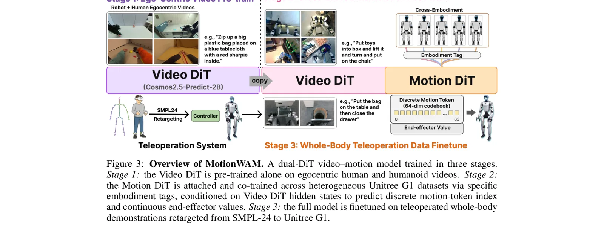
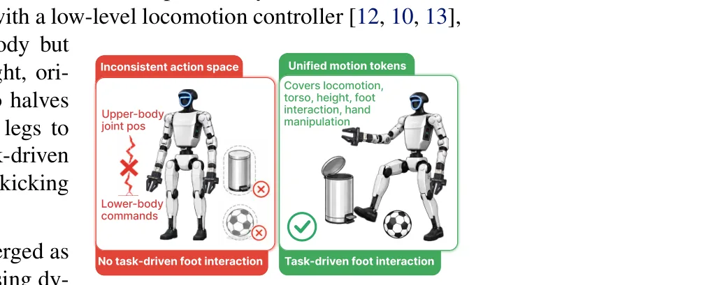

⚡速记层 · 思想 / 逻辑 / 方法
默认读完就走的一层——只讲思想、逻辑、方法；效果只作验证。要核对原文再进下面的「深读层」。
人形要在人类尺度环境里边走边操作。两条主流路线各有短板：① 纯 VLA 靠静态「图像-文本」底座，缺对时间演化与接触物理的建模；② 世界动作模型(WAM) 能注入动力学先验、行为更连贯，但高维视频-动作迭代去噪太慢，至今只在桌面机械臂上跑、上不了实时人形。再加上分层控制把腿降格成保平衡，任务性脚动作根本无法表达。
- 立两个问题：world model 的动力学先验能否(a)实时、(b)在统一全身动作空间里，驱动人形 loco-manip？
- 实时关键：把 Video DiT 固定在纯噪声端(τ≈1)跑"一次想象"，用 forward hook 截取某个 transformer block 的中间激活当条件，从不真的去噪那些未来帧——单次前向 → 实时。
- 统一动作：在 SONIC 之上用 FSQ 把全身意图压成 64 维离散 motion token，加上手部连续通道，一个动作空间覆盖移动/躯干/升降/脚部/手操作。
- 怎么训：dual-DiT(Video DiT⟷Motion DiT) 三阶段——①第一视角视频预训练(只更 Video DiT) ②跨本体动作后训练(挂上 Motion DiT 联合训) ③全身遥操微调。
- 关键洞察：阶段1 的瓶颈是第一视角视觉动力学、不是动作多样性——所以用便宜的无动作视频(2136h)扩规模，不被小量动作数据卡住。
- 验证：9 真机任务 43.9%→76.1% 反超 SOTA VLA，脚部/全身协同任务领先最多；4.9Hz 实时、比 Cosmos Policy 快 7×；三阶段缺一不可。
单目第一视角图像+语言 → Video DiT 一次前向(τ≈1)出"中间去噪特征" → Motion DiT 交错自/交叉注意力 + 本体感觉 → 统一全身 motion token → SONIC 解码成关节命令
- ① 读中间特征而非去噪结果：forward hook 截单个 block 在固定 flow 时刻的激活，单次前向保实时（全文实时性的命门）。
- ② 统一 whole-body motion latent：SONIC + FSQ 离散 token（64 维）覆盖 locomotion/torso/height/foot，连续通道驱动手；腿获得"任务性动作词表"。
- ③ 三阶段"视频→本体"递进训练：视频与动作分支轮流专精，而非从头联合优化；阶段2保留视频损失当正则防动力学先验被覆盖。


耦合视频世界模型确实带来真机优势：统一动作空间让腿主动参与任务，脚部协同任务领先最多。
| 9 任务平均成功率（20 trials/任务） | 成功率 | 📍 |
|---|---|---|
| MotionWAM | 76.1% | p.7 · Fig.5 |
| GR00T-N1.7（最强基线） | 43.9% | p.7 · Fig.5 |
| π0.5 | <20% | p.7 · Fig.5 |
| Qwen3DiT（VLM-only 等参对照） | ≈0（locomotion 任务） | p.7 · Fig.5 |
- 对立 / 竞争路线：OpenHLM 解同一个问题（G1 全身 loco-manip、同用 SONIC、同要统一全身），但走 VLA-菜谱路线（π0.5 初始化 + 遥操配方）；MotionWAM 走 视频世界模型路线——两篇正好是同一战场的两种范式。
- 被反超的竞品：GR00T N1（这里用 N1.7，43.9%）与 π0.5（<20%）作为 SOTA VLA 基线，在同样 Stage3 数据上被反超 30+ 点。
- 背景 / 同议题：World Model 综述 给出 WAM 范式全景；WholeBodyVLA 同追"统一全身 latent"但用 VLA 而非视频世界模型。
Track A（人形 VLA / 移动操作）强命中：是 VLA 之外的第二条技术路线（视频世界模型驱动），"读中间去噪特征单次前向"是把生成式世界模型做到实时的可借鉴技巧；统一 whole-body motion token + SONIC 解码接口可参考。落地门槛：需 Cosmos-Predict2.5 量级视频 DiT + 2136h 第一视角视频 + SONIC + A100/4090，未开源需自实现。
Track B（足式控制）部分命中：底层复用 SONIC motion tracker，"让腿做任务性动作"的统一动作空间对全身控制有启发。
◆核心观点 · 证据
每条 = 分型论点（常驻）+ 解读（常驻）+ 折叠的逐字原文/译文（📍真实页码，Ctrl-F 锚点）。8 观点 · 10 证据。
问题与动机
分层把腿降格、WAM 又太慢
两个叠加的痛点：分层控制让上下身处于不一致动作空间、腿只保平衡做不了任务性脚动作；而能注入动力学先验的世界模型因迭代去噪太慢，连桌面臂都难实时。
📍 p.2 · §1 — 查逐字证据
This forces the two halves into inconsistent action spaces and restricts the legs to balance-preserving locomotion, ruling out task-driven foot interaction such as stepping on a pedal or kicking an object
📍 p.2 · §1 — 查逐字证据
iterative denoising over high-dimensional video-action latents is costly, and existing WAMs struggle to reach real-time rates even on tabletop arms.
方法
读"中间去噪特征"单次前向 → 实时
把 Video DiT 固定在纯噪声端(τ≈1)的"一次想象"模式，用 forward hook 截取单个 transformer block 的中间激活当条件，从不真的去噪未来帧——这单次前向就是 MotionWAM 能实时闭环的原因。
📍 p.4 · §3.2 — 查逐字证据
one pass yields activations that en-code where the scene is about to go, never denoising those frames. This single pass is what keeps MotionWAM real time on a closed-loop humanoid.
统一 whole-body motion token（SONIC+FSQ）
不再拆成"上身关节+下身 base 命令"，而是在 SONIC 通用全身控制器之上用 FSQ 把全身意图压成 64 维离散 token（加手部连续通道），一个动作空间覆盖移动/躯干/升降/脚部交互/手操作。
📍 p.4 · §3.1 — 查逐字证据
on top of SONIC [4], a universal whole-body controller that fuses different motion targets through a single shared latent. The shared latent is bottlenecked by Finite Scalar Quantization [38] with 2 tokens of 32 levels each
dual-DiT + 三阶段"视频→本体"训练
Video DiT(由 Cosmos-Predict2.5-2B 初始化)与 Motion DiT 耦合，分三阶段递进训练：①只预训视频分支(2136h 第一视角视频) ②挂上动作分支跨本体联合训 ③全身遥操微调；VAE 与文本编码器全程冻结。
📍 p.3 · §1 — 查逐字证据
to our knowledge, the first closed-loop end-to-end WAM-driven policy that performs whole-body humanoid loco-manipulation in real time, including task-driven foot behaviors such as ball kicking and pedal stepping
瓶颈是第一视角视觉动力学，不是动作多样性
阶段1的关键判断：限制性能的是"第一视角视觉动力学"而非动作多样性——所以用便宜的无动作视频单独把 Video DiT 喂饱，trunk 吸收规模而不被小量带动作标注的演示卡住。
📍 p.5 · §3.3 — 查逐字证据
Our key insight is that egocentric visual dynamics, not action diversity, is the bottleneck at this stage: by training the Video DiT alone on cheap, action-free video, the trunk absorbs scale
结果与边界
9 任务 43.9%→76.1% 反超 SOTA VLA
同样 Stage3 数据、同样 SONIC 接口下，唯一变量是"条件来自视频世界模型中间特征还是 VLM 图文特征"：MotionWAM 每任务全胜、平均 76.1%，比最强 VLA 基线 GR00T-N1.7(43.9%) 高 32 个点；脚部/全身协同任务领先最多(+40~45%)。
📍 p.7 · §4.2 — 查逐字证据
MotionWAM wins on every task and lifts the overall success rate from 43.9% (the strongest baseline, GR00T-N1.7) to 76.1%, an over 32% absolute gain.
📍 p.7 · §4.2 — 查逐字证据
even π0.5 stays under 20% overall, indicating that strong semantic priors alone do not transfer to the closed-loop physics humanoid loco-manipulation demands.
4.9Hz 实时、比 Cosmos Policy 快 7×；三阶段缺一不可
A100 上 4.9Hz，与同规模 VLA 基线相当，而比同样基于世界模型的 Cosmos Policy(0.7Hz) 快 7 倍——因为后者要迭代去噪未来视频，MotionWAM 只读一次中间特征。消融显示去掉 Stage1/Stage2 分别掉 11%/28%。
📍 p.8 · §4.4 — 查逐字证据
MotionWAM is seven times faster (4.9 Hz vs. 0.7 Hz), because Cosmos Policy must iteratively denoise the future video before producing actions whereas MotionWAM reads off intermediate denoising features in a single pass.
📍 p.7 · §4.3 — 查逐字证据
removing Stage 1 and Stage 2 leads to 11% and 28% absolute performance drop respectively.
单 G1、无 OOD 物体测试、出视野即失败
三阶段仅在 Unitree G1 单本体验证、跨硬件未知；无受控的新物体泛化测试(训练/测试物体视觉相近)；单目第一视角是软肋——物体出视野或头相机视角偏离训练分布时会失去视觉锚定而卡住。
📍 p.8 · §6 — 查逐字证据
the Stage 3 fine-tune has been validated only on the Unitree G1 embodiment ... MotionWAM falters when the manipulated object leaves the field of view or the head-camera viewpoint drifts
⎘开源状态 · 实时核查（截至 2026-06）
- 代码
- 未见 未检索到官方代码仓库
- 权重
- 未见 无发布的 checkpoint
- 项目页
- 未见 未检索到 Mondo Robotics 官方 project page；仅有 arXiv abs/html
- 数据
- 未见 2136h 视频混合 + 9 任务遥操数据均未公开
- 平台
- Unitree G1 + dual ALOHA2 夹爪 + RealSense D435i 头相机 + PICO VR 三点遥操 + SONIC
⚖批判 · 评级
"读中间去噪特征单次前向"是把生成式视频世界模型做到实时闭环的真增量，配 7× 提速与干净的控制变量对照(同数据/同接口/同动作空间)；统一全身 motion token 真解锁了解耦策略做不到的任务性脚动作；首个实时全身人形 WAM。
仅 Unitree G1 单本体、无 OOD 物体泛化测试、单相机出视野即失败(见局限8)；完全未开源、复现门槛高(Cosmos 量级 + 2136h 视频)；9 任务、20 trials 规模有限；非同行评审。
评级：Important 非 Breakthrough（重度建在 Cosmos-Predict / SONIC / DiT4DiT 之上，单平台、闭源），但"中间特征单次前向→实时 WAM"的机制 + 反超 SOTA VLA 30+ 点，给"世界模型做人形策略"开了条可行路线。